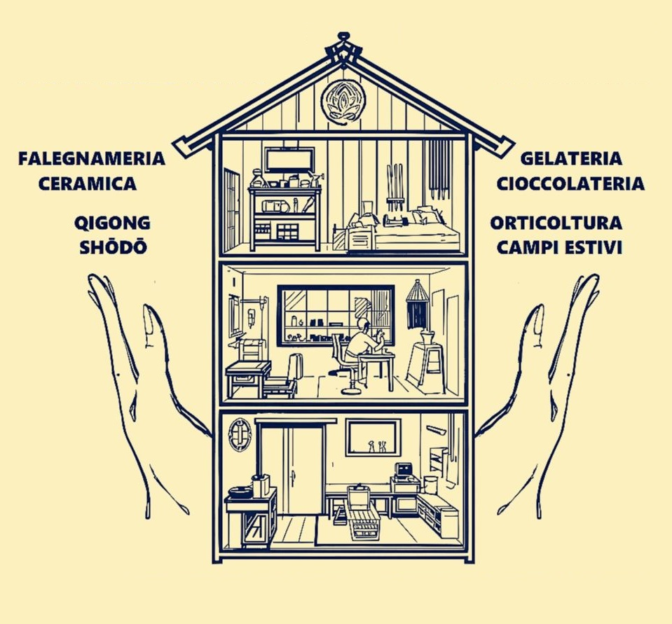
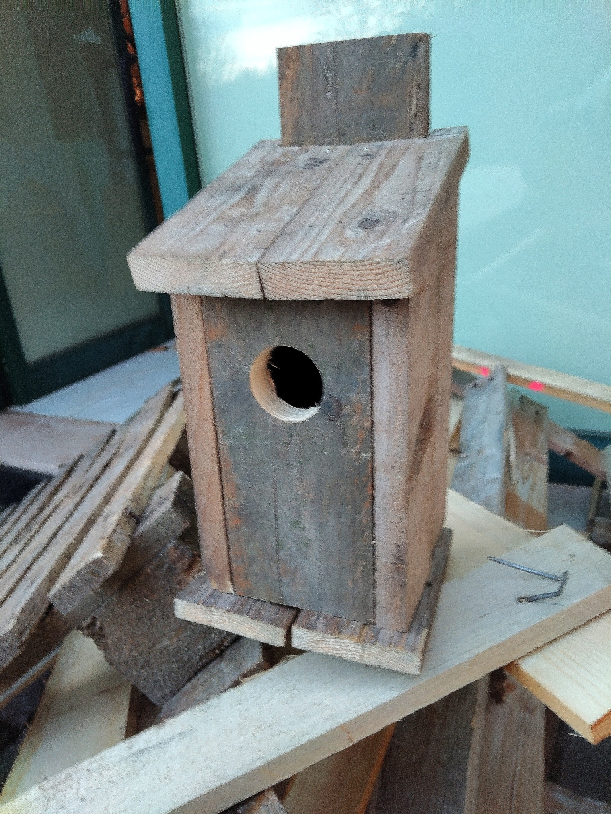
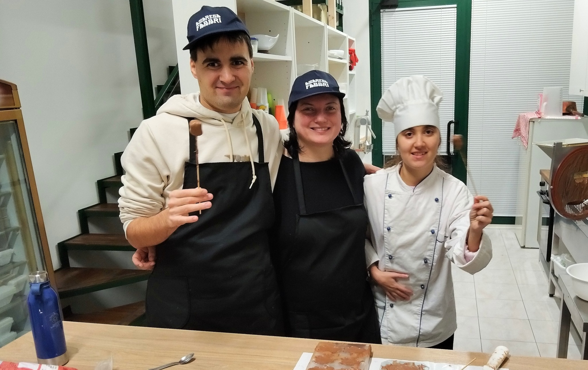
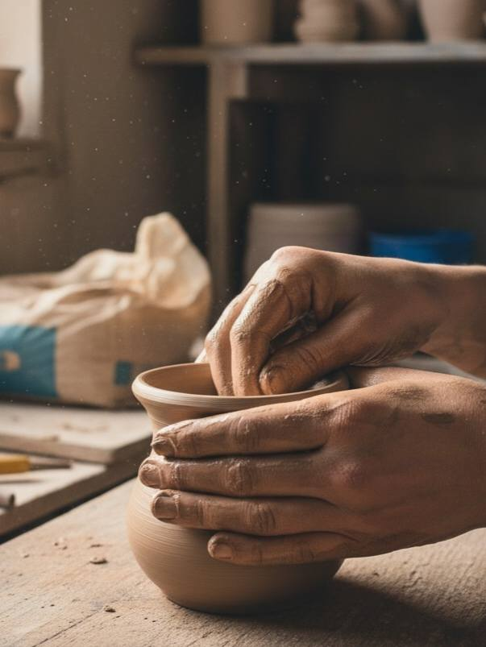

Il progetto "Ama et Labora"

Il progetto "Ama et Labora" nasce più di 10 anni fa nel monastero zen di Bargone, in collaborazione con diversi enti ed associazioni. Il monaco zen Carmine Shinkō De Rosario, grazie anche all'esperienza ventennale nell'ambito dell'educazione psicomotoria, crea un approccio didattico che vede ampiamente utilizzati i linguaggi del lavoro manuale, dell'artigianato, dell'arte e della cura collettiva di luoghi come giardini e luoghi condivisi.
Centinaia di ragazzi e ragazze, sono stati coinvolti in questi anni in attività come falegnameria, cura del giardino e lavoro nell'orto. Non sono mancati negli incontri settimanali e nei campi estivi residenziali i linguaggi legati alle arti zen come shōdō (calligrafia giapponese), qigong (yoga cinese), taiko (tamburo), arti marziali e meditazione.
L'implicazione esperienziale in queste attività diventa un "lavoro" fatto sulla materia e su noi stessi. Il lavoro, qui inteso come nobile opera che riqualifica il senso della vita umana, diventa spazio, tempo, linguaggio di scambio simbolico. Agire insieme agli altri, lavorare con intelligenza e senso estetico aiuta a riconnettersi agli scenari interiori ed esteriori dello scorrere della vita.

Falegnameria
Laboratori pratici per imparare l'arte della lavorazione del legno. Un'esperienza che unisce manualità, creatività e la soddisfazione di creare oggetti unici con le proprie mani.
Scopri di più
Cioccolateria
Corsi per creare deliziose creazioni al cioccolato artigianale. Impara le tecniche di lavorazione del cioccolato e crea dolci unici e raffinati.
Scopri di più
Orticoltura
Coltivazione biologica e cura dell'orto in un ambiente naturale. Connettiti con la terra e impara i segreti di una coltivazione sostenibile e rispettosa.
Scopri di più
Qigong (Yoga Cinese)
Laboratori psicomotori per il benessere fisico e mentale. Pratica antica che armonizza corpo, mente e spirito attraverso movimenti fluidi e meditazione.
Scopri di più
Gelateria
Corsi per preparare gelato artigianale con ingredienti naturali. Scopri i segreti della gelateria tradizionale e crea gusti unici e genuini.
Scopri di più
Ceramica
Corsi di modellazione e decorazione ceramica. Dai forma alla tua creatività lavorando l'argilla e creando opere d'arte uniche.
Scopri di più
SHŌDŌ (Calligrafia Giapponese)
L'arte della calligrafia giapponese insegna disciplina, concentrazione e armonia. Impara a tracciare i caratteri con il pennello, scoprendo la bellezza dell'imperfezione.
Scopri di più
Spazio Giovani
Uno spazio dedicato ai ragazzi per socializzare, crescere insieme e partecipare ad attività ricreative e creative. Un luogo dove fare nuove amicizie e sentirsi accolti e valorizzati.
Scopri di più
Gite e Vacanze
Organizziamo gite ed esperienze di vacanza per offrire momenti di svago, scoperta e condivisione. Esperienze indimenticabili che uniscono divertimento e apprendimento.
Scopri di piùOrari e Referenti
Lunedì
Gelateria
con Giuliano Curati
15:00 - 17:00
Gelateria
con Giuliano Curati
1 lezione serale/mese
Martedì
Qigong (Yoga Cinese)
con Carmine Shinko
16:00 - 17:00
Zazen (Meditazione Zen)
con Carmine Shinko
18:00 - 19:00
Mercoledì
Falegnameria
con Carmine Shinko
15:00 - 17:00
Qigong
con Carmine Shinko
18:00 - 19:00
Giovedì
Cioccolateria
con Manuela Fiscarelli
15:00 - 17:00
Venerdì
Gelateria
con Giuliano Curati
15:00 - 17:00
Shodo (Calligrafia Giapponese)
con Maurizio Anshu
Sabato
Ceramica
con Stefano Fedolfi
10:30 - 12:00